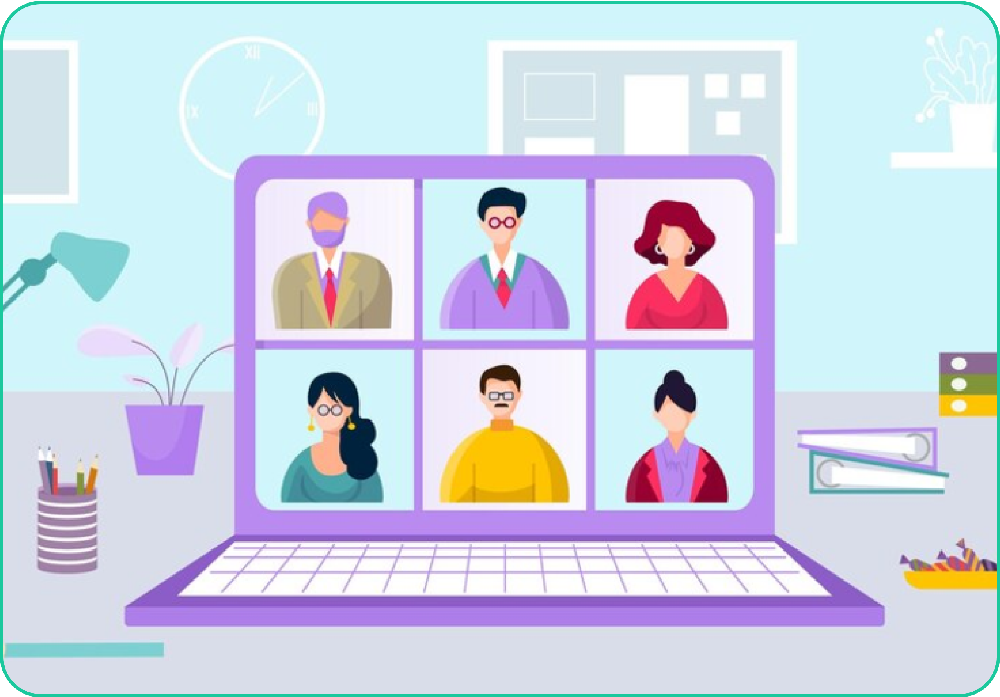
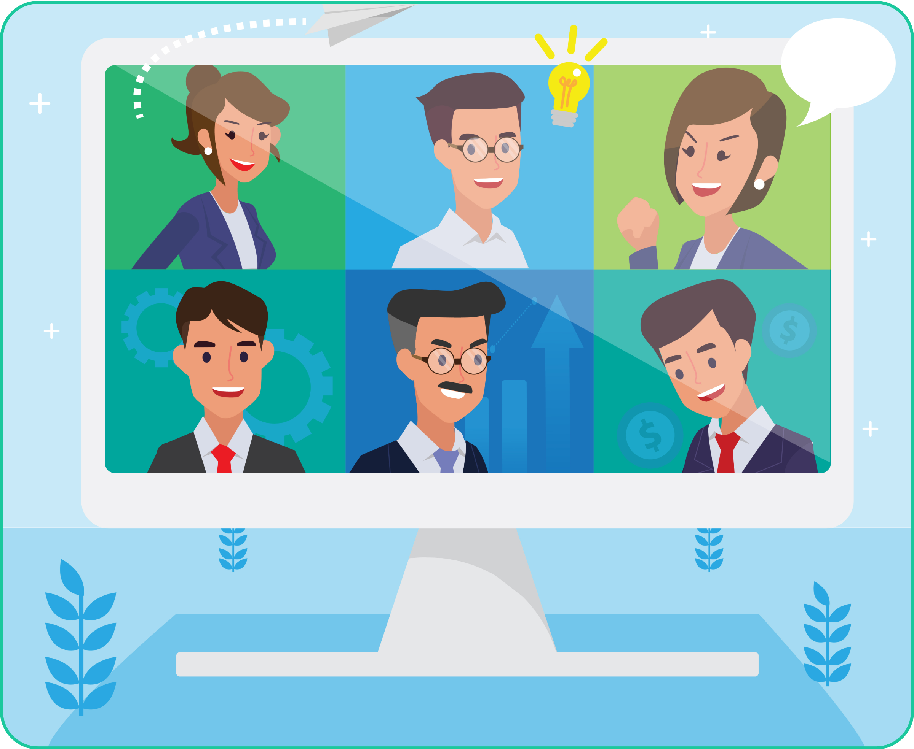

Mari Bergabung Bersama Kami
Masuk dan diskusi dengan komunitas pilihanmu di sini,
jadilah bagian dari perkembangan diri pribadi dan orang lain
Komunitas Sobat LS
Untuk semua anggota umum yang ingin berbagi dan berdiskusi #Sampaijadibisa.
Jumlah Anggota : 80.000
Keunggulan Komunitas
- Informasi mengenai kelas LuarSekolah, Prakerja, dan ISW
- Informasi mengenai event LuarSekolah
- Giveaway voucher kelas gratis

Komunitas Alumni Belajar Bekerja
Komunitas ini hadir untuk kamu yang berhasil lulus program Belajar Bekerja termasuk alumni magang+.
Jumlah Anggota : 25.000
Keunggulan Komunitas
- Open Diskusi terkait materi/Live Session
- Informasi project magang/intern
- Pemetaan minat dan topik
- Layanan Job Connector
- Informasi lowongan kerja sesuai program Belajar Magang
- Layanan bimbingan karir
- Membangun koneksi antar mitra alumni
- Diskusi terkait success story alumni Belajar Bekerja
Komunitas Alumni Prakerja dan ISW
Komunitas ini hadir untuk kamu yang telah menyelesaikan pelatihan prakerja dan event ISW.
Jumlah Anggota : 20.000
Keunggulan Komunitas
- Komunitas ini hadir untuk kamu yang telah menyelesaikan pelatihan prakerja dan event ISW.
- Informasi umum tentang event LS atau DPxPrakerja
